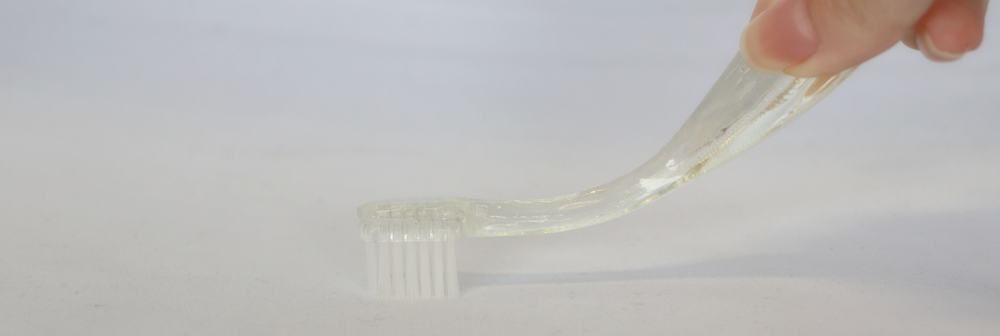
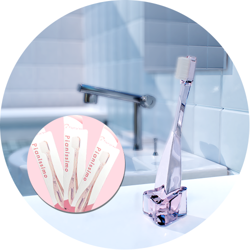

Pianissimo
Pianissimoは、歯や歯茎をに優しく
歯周病の原因となる磨きすぎを防止します
毎日の歯ブラシが
あなたの歯を痛めているかもしれません
乱暴なブラッシングは、歯や歯茎にダメージを与えることがあります。
力強く歯を磨くデメリット
歯を傷つける
強い力のブラッシングは
歯のエナメル質※1にダメージを与えます
歯茎からの出血
急いで磨くことで
歯垢残ってしまい虫歯の原因になります
ブラシが広がる
毛先が広がった状態では
歯間と歯頸部※2にブラシが届きません
※1 エナメル質とは歯の歯冠の最表層にある、生体で最も硬い硬組織
※2 歯頸部とは歯と歯茎の境目
歯ブラシの持ち方

パームグリップ
パームグリップとは、歯ブラシを握り込むように持つ持ち方です。ブラッシング時に力が入りやすく、大きくブラシを動かすことになり推奨されていません。
ペングリップ
ペングリップとは、その名の通りペンを持つように歯ブラシを持つ持ち方です。適度な力加減で磨くことができ、細かくブラシを動かすことができるため磨き残しが少なくなります。
"Pianissimo"は簡単にこれらの問題を解決する
全く新しい歯ブラシ

Pianissimoとは？
歯周病を自分で治す独特な歯ブラシ
柔らかく短い形状により、歯や歯茎に優しく歯周病を防ぎます

歯ブラシの形状の見直し
従来当たり前のようにあった長い柄の部分に注目しました。長い柄があることで、パームグリップで持つことができていしまいました。そこで、短くすることでパームグリップになってしまうことを失せぎました。また、柄を三角形の形状にすることでペングリップに矯正できます。

柔らかい素材で常に適正圧
ブラシが歯にかかる圧力は、100~200gが最適であるとされています。意識的に磨かなければ200gは簡単に超えてしまいます。そのため、Pianissimoは、柔らかい素材を用いています。大きく力が加わると、曲がり力が分散されます。常に適正圧の範囲内でブラッシングをすることができます。

毛先で磨くことができる
ブラシの毛先が潰れて広がらずに磨くことで、歯垢が残ってしまいます。適切な持ち方で適正圧で磨けるPianissimoでは、毛先が広がらず確実に歯垢を取り除きます。
プロダクトへの支援
￥1000 |
￥1500 |
 ￥2000 |
|---|---|---|
| Pianissimo x 1 | Pianissimo x 2 | Pianissimo x 3 |
| 専用スタンド x 1 | 専用スタンド x 2 | 専用スタンド x 3 |